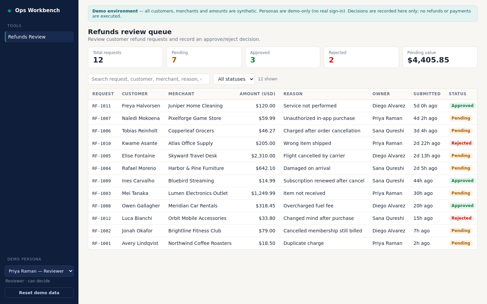
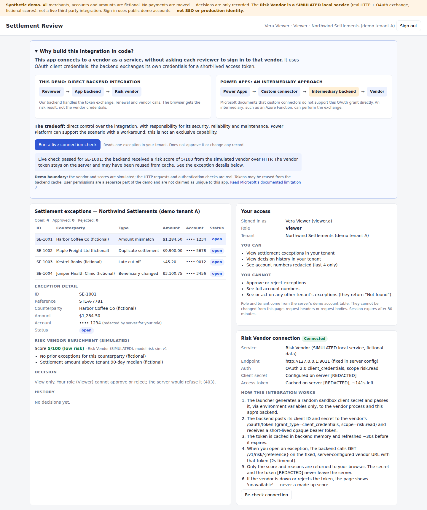

Can Devin build
your next internal tool?
A working evaluation for a fintech team: what Devin makes easier, how it fits your workflow, and what your engineers still own.
What is Devin?
An AI software engineer that can carry a request through code, testing and review.
- Work happens in a cloud development environment. Devin can inspect a repository, edit files, run commands and exercise the app in a browser.
- The request can start in ordinary language. A clear business change becomes a concrete implementation, with code and checks available to inspect.
- Collaboration is conversational. You can ask questions, redirect the work and request evidence along the way. The interaction resembles delegating to a teammate; the output still needs review.
- The result is software your team owns. For this experiment, the deliverable is a GitHub repository and working applications. Engineering still owns releases and operation.
Presenter cue
Introduce yourself and the decision: can a 60-engineer fintech build its next internal tools with Devin? Explain that you tested creation, change and reuse.
The first session: Refunds Review
A small operations queue that exercises the common building blocks of an internal tool.

- Review a request and record a decision. Search and filter refunds, approve or reject with a reason, then inspect the saved history.
- Change the app in a fresh session. A later request added the pending-over-48-hours filter, testing maintenance as well as the initial build.
- Reuse the foundation. Merchant Reviews shares interface components and decision rules while keeping its records separate.
- Check behavior, not just appearance. The original app passed 26 backend tests, frontend checks and browser walkthroughs. Its selectable personas are demo identities, not employee authentication.
Presenter cue
Show the original request and result, then make one decision in the app. Point to the overdue filter and switch to Merchant Reviews.
Customize Devin around your workflow
Connect the places your team already stores code, tracks work, accesses data and discusses changes.
Illustrative workflow after configuration. These connections do not grant blanket access to data.
- Keep your code and conventions. Connect source control, prepare the development environment and provide repository instructions or Skills. Devin can follow the team’s setup, test and pull-request process. Integration options ↗
- Keep data where it belongs. Devin can use configured APIs, database tools or MCP connections. For AWS, OIDC can provide temporary role-based access; for an AWS-hosted database, network access and database permissions still need setup. There is no requirement to migrate data into Devin. Cloud access ↗ Database and tool connections ↗
- Keep work in your project tracker. Jira Cloud can hand work to Devin through assignments, mentions or configured events, with results posted back to the work item. Linear is also supported; other tools depend on their available integration or API. Jira workflow ↗ Supported integrations ↗
- Talk where your team already works. Once Microsoft Teams is connected and users are linked, they can mention Devin, receive updates and questions, and continue the conversation in context. Jira automations can post their final result back to the issue. Teams collaboration ↗
- Review a video and give concrete feedback. Ask Devin to test a flow and send a browser recording. Reply with the change you want, then request another check. A recording makes review easier; it covers only the behavior shown. Testing and recordings ↗
You “The overdue filter looks right. Keep rejected refunds out of that count, and send me a recording.”
Review loop Clarify the rule → update the code → run checks → watch the result.
Example wording, not a transcript from the demo.
Presenter cue
Show GitHub and the Connections tab. Explain the existing-workflow fit, then point to the saved video as the feedback loop. Describe AWS, Jira and Teams as capabilities you would configure for the client.
Playbooks make repeat work easier
A reusable brief gives each session the scope, constraints and definition of done.
- Capture the process once. A Playbook holds task instructions that can be reused when the same kind of work comes around.
- Use a different brief for each job. Our Create, Update, Variant and Health Playbooks cover building a tool, making a change, reusing a foundation and checking it.
- Carry project knowledge with the code. Repository instructions and Skills describe how to start the app, preserve its rules and verify changes.
- Make later requests smaller. “Add an overdue filter” can refer to an established workflow. Instructions guide behavior; they do not enforce permissions or guarantee a correct result.
Build a useful first workflow.
Change it without breaking the rules.
Reuse the base for a second tool.
Run checks and report findings.
Devin Playbooks documentation ↗
Presenter cue
Show the Create Playbook and its verification instructions. Explain that the second request reuses the process rather than restating the entire project.
Settlement Review: when code gives you more control
A separate follow-up tests a custom connection and app-level access rules.
- Connect behind the app. The backend obtains a scoped token using OAuth client credentials and calls a simulated risk vendor. Credentials stay out of the browser.
- Be precise about the Power Apps distinction. Microsoft documents that custom connectors do not directly support this grant. Power Platform can still use an intermediary backend. Our code implements that connection directly, and we own its maintenance. Microsoft’s documented limitation ↗
- Show the connection working. The in-app comparison explains both approaches. “Run a live connection check” fetches a risk result without changing a settlement.
- Enforce access on the server. A viewer cannot decide; an operator can decide only for their own tenant. These permissions are important, but they are also possible in Power Platform.
- Keep the evidence in proportion. The vendor and accounts are fictional; the HTTP exchange and permission checks are real. This separately timed follow-up passed 28 tests, 14 HTTP checks and browser journeys locally.
Settlement app → our backend → mock risk vendor
Power Apps → connector → intermediary → vendor

Presenter cue
Sign in as viewer.a. Run the live connection check, then explain the server-side roles. Use operator.a if showing a decision. Do not claim Power Apps cannot build this workflow at all.
Automations start work. Controls bound it.
Decide which requests launch Devin, what the session can access and who publishes the result.
- Start from an event or schedule. Automations can turn a connected ticket update, repository event or scheduled check into a session with an established task. Automation capabilities ↗
- Filter the request before execution. Our integration automation is configured for a specific repository, comment author, command prefix and issue-title prefix. A tag describes a session; it does not authorize a person.
- Limit the session’s tools and access. The saved profile specifies read-only Git, no GitHub CLI token, no external MCP servers and a host allowlist. The integration automation also has usage and invocation limits. Security profiles ↗
- Separate the permission boundaries. App roles govern users of the dashboard. Devin credentials govern what the builder can reach. Repository and release permissions govern who can publish.
- Distinguish configuration from proof. The sample was manually launched and publication required a handoff. Request-filter dispatch and profile enforcement were not conclusively demonstrated. Automations are preserved but disabled.
Identity + trigger conditions
Profile + tools + credentials
Sign-in + roles + tenant
Repository + deployment access
Presenter cue
Show the actual comment-author filter, then the bound security profile. Explain that manual Run did not prove the event filters. Tags and Playbooks are not permission enforcement.
The tradeoff: flexibility brings ownership
Devin lowers the effort of building and changing software. Power Apps supplies a managed platform around it.
- A working screen is only part of the replacement. Identity, connectors, managed data, governance and app lifecycle tooling contribute to Power Apps’ value.
- The team inherits ongoing work. Custom apps need security reviews, reliable hosting, backups, upgrades, monitoring and a named support owner.
- Review time is part of the build cost. Independent review found defects that needed fixing. Video evidence helps review, but cannot establish production readiness.
- Validate the avoidable spend. The $250k is the challenge’s annual contract cost. Ten more apps do not automatically add ten more license fees; replacing one app may remove none of that bill.
- Start with a measured pilot. Keep the existing workflows. Spend 30 days on one new, low-risk tool and measure delivery time, review effort and support load before choosing wider migration.
Keep the platform. Test the next tool.
Give the pilot a named engineering owner. Validate production controls and compare total ownership cost against the part of the contract you can actually retire.
Dataverse ↗ Power Platform lifecycle ↗
Presenter cue
Close with the pilot recommendation and the ownership-cost decision. Do not imply that this prototype has already eliminated the license spend.
Demo links & presenter resources
Use the page as a visual reference; keep setup details and optional commands here.
Before recording · setup and demo logins
- Open the local app at localhost:8765. If it is stopped, double-click START-DEMO.cmd from this folder. Leave its terminal open. For another machine, follow the repository README.
- Sign in to your personal Devin account (soham.dav@gmail.com) and open the section links above; the full tab directory below includes supporting evidence. Sessions were launched by the service account or organization automation identity. Use direct links or All sessions if they are absent from My sessions. Keep the P-1 account out of this walkthrough.
- In the app, choose the reviewer persona. Reset demo data in both modules, then return to Refunds. Clear search and select all statuses. Expect 12 refunds, 7 pending, 4 pending over 48 hours; Merchant Reviews has 8 records.
- For the follow-up sample, open localhost:8766 or run START-SETTLEMENT-DEMO.cmd. Public demo logins: viewer.a / viewer-a-demo, operator.a / operator-a-demo, operator.b / operator-b-demo. If you need fresh records, stop the running sample and then restart it with the launcher. These do not authenticate real employees.
- This page is a reference, not a script to read word for word. Use the seven presenter cues and rehearse to keep the recording under five minutes. Show completed sessions rather than waiting for a new build.
- Optional: submit live command 1 at the start, show the existing examples while it runs, then show its answer only if ready. Leave command 2 for discussion after the five-minute presentation.
All session and settings tabs
| A · Playbooks | Create Playbook — show the reusable instructions ↗ |
| B · Build session | Completed refunds build — show request and result ↗ |
| C · App | Live local app — decision, overdue filter and merchant variant ↗ |
| D · Automations | Requested Update — trigger, Playbook, identity and 12-ACU limit ↗ |
| E · Update session | Completed change — show actual result and publishing blocker ↗ |
| F · Variant session | Merchant Reviews — fresh session and reuse ↗ |
| J · Integration session | Controlled integration — separate follow-up ↗ |
| K · Settlement app | Server-enforced roles, tenant isolation and simulated vendor ↗ |
| L · Approved-request automation | Comment-author filter, session tags and security profile ↗ |
| G · Security profiles | Open Internal Tools — Read-only Review ↗ |
| H · Health (supporting) | Disabled Health automation — profile binding and 8-ACU limit ↗ |
| I · Health result (supporting) | Completed checks — delayed-start/manual-retry caveat ↗ |
Cloud fallback: Devin session preview ↗. It requires session access and an awake VM. The local app and saved recordings avoid that dependency.
Two optional live commands
1. Safe for the five-minute recording: paste into the completed merchant session. It inspects the repository without changing the demo. Allow up to a minute; use the completed evidence if it is still running.
In Soham4001A/devin-internal-tools-demo, inspect current main and explain how a Merchant Reviews decision stays separate from Refunds. Point me to the code and existing tests. Do not change any files or data. Keep the answer under 120 words.
2. Optional follow-up: use a new session, attach the Update Playbook, and paste this request. It demonstrates the next change as a reviewable PR. Budget several minutes outside the Loom; it has not been pre-executed.
Use !internal_tool_update for Soham4001A/devin-internal-tools-demo. On a new branch, rename the Refunds search placeholder to “Search customer, merchant or request ID”. Preserve search behavior, verify it, and open a small PR. Do not merge, deploy, or change any records. Stop after the PR and show the result.
Create Playbook ↗ · Update Playbook ↗ · Variant Playbook ↗ · Health automation ↗
Ownership cost · illustrative scenarios
Illustrative assumptions: $250k/year fully loaded engineer; $20k/year other incremental run costs; $50k one-time productionization/migration. Engineering is additional to the current Power Apps support effort.
$117.5k potential benefit if the full $250k contract disappears.
$70k more than the potentially avoided contract.
These are sensitivity examples, not forecasts. A pilot retaining the license saves none of the $250k immediately. Check renewal terms, bundled products, app users and the removable portion of the contract. Ten more apps do not automatically create ten more fees. Devin usage and hosting must be measured, not inferred from interim zero counters.